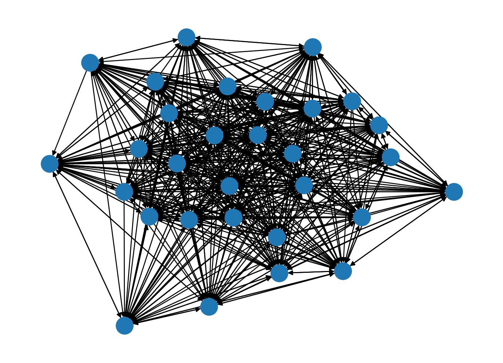
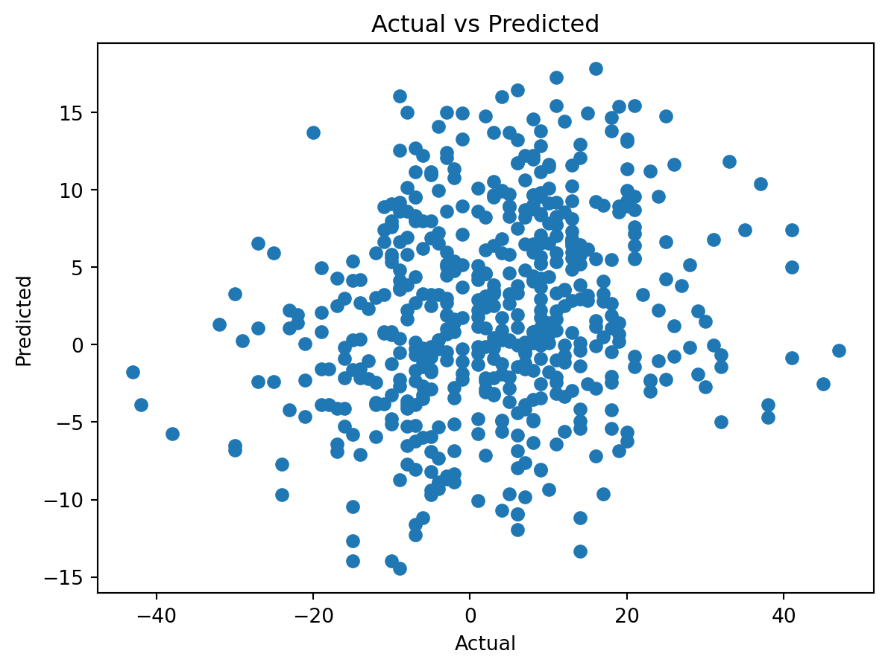

import sympy as sym
import numpy as np
import networkx as nx
import pandas as pdI am using NBA games from 2021 as the the training data and 2022 season as the test data
games_data = pd.read_csv('games.csv', usecols=['HOME_TEAM_ID', 'VISITOR_TEAM_ID', 'SEASON', 'PTS_home', 'PTS_away'] )
games_df = games_data.loc[games_data.SEASON.isin([2021, 2022]), :]
print(games_df.shape)
display(games_df.head())(1931, 5)| HOME_TEAM_ID | VISITOR_TEAM_ID | SEASON | PTS_home | PTS_away | |
|---|---|---|---|---|---|
| 0 | 1610612740 | 1610612759 | 2022 | 126.0 | 117.0 |
| 1 | 1610612762 | 1610612764 | 2022 | 120.0 | 112.0 |
| 2 | 1610612739 | 1610612749 | 2022 | 114.0 | 106.0 |
| 3 | 1610612755 | 1610612765 | 2022 | 113.0 | 93.0 |
| 4 | 1610612737 | 1610612741 | 2022 | 108.0 | 110.0 |
In order to create the graph analytics I first transform the data so that the winners and losers are in the same columns. Then I average the scores since the same teams play each other multiple times.
games_df['margin'] = np.abs(games_df.PTS_home - games_df.PTS_away)
games_df['winner'] = np.where(games_df.PTS_home > games_df.PTS_away, games_df.HOME_TEAM_ID, games_df.VISITOR_TEAM_ID)
games_df['loser'] = np.where(games_df.PTS_home <= games_df.PTS_away, games_df.HOME_TEAM_ID, games_df.VISITOR_TEAM_ID)
df = games_df.groupby(['winner', 'loser', 'SEASON'],as_index=False)[['margin']].mean()/var/folders/nw/bgfbrcp92xxbt0l2nkylhyqm0000gq/T/ipykernel_13550/2485298653.py:1: SettingWithCopyWarning:
A value is trying to be set on a copy of a slice from a DataFrame.
Try using .loc[row_indexer,col_indexer] = value instead
See the caveats in the documentation: https://pandas.pydata.org/pandas-docs/stable/user_guide/indexing.html#returning-a-view-versus-a-copy
/var/folders/nw/bgfbrcp92xxbt0l2nkylhyqm0000gq/T/ipykernel_13550/2485298653.py:2: SettingWithCopyWarning:
A value is trying to be set on a copy of a slice from a DataFrame.
Try using .loc[row_indexer,col_indexer] = value instead
See the caveats in the documentation: https://pandas.pydata.org/pandas-docs/stable/user_guide/indexing.html#returning-a-view-versus-a-copy
/var/folders/nw/bgfbrcp92xxbt0l2nkylhyqm0000gq/T/ipykernel_13550/2485298653.py:3: SettingWithCopyWarning:
A value is trying to be set on a copy of a slice from a DataFrame.
Try using .loc[row_indexer,col_indexer] = value instead
See the caveats in the documentation: https://pandas.pydata.org/pandas-docs/stable/user_guide/indexing.html#returning-a-view-versus-a-copy
# find all rows where the SEASON is equal to 2021
train = df.SEASON == 2021
df_2021 = df.loc[train, :]
df_2021.shape(705, 4)nodes = df_2021.winner.unique()Create a weighted directed graph like in the prompt
G = nx.DiGraph()
G.add_nodes_from(nodes)
G.add_weighted_edges_from([(h, v, w) for h,v,w in zip(df_2021.winner, df_2021.loser, df_2021.margin)])Draw using networkx
nx.draw(G, with_labels=False)
Incidence Matrix
adj_mat = nx.to_numpy_array(G)
adj_mat.shape(30, 30)Create power ranking as well as sum of points to serve as features in the least squares model
power_ranking = pd.Series((adj_mat + adj_mat**2).mean(axis=1), index=nodes, name='power')
ranking = pd.Series(adj_mat.mean(axis=1), index=nodes, name='ranking')Join the games dataframe with the rankings for both HOME teams as well as VISITOR teams. Note that the rankings were created off of 2021 data ONLY
df = games_df[['HOME_TEAM_ID', 'VISITOR_TEAM_ID', 'SEASON', 'PTS_home', 'PTS_away']].set_index('HOME_TEAM_ID')\
.join(ranking, how='left').join(power_ranking, how='left').rename(columns={'ranking':'home_rank', 'power': 'home_power'})\
.reset_index().set_index('VISITOR_TEAM_ID').join(ranking, how='left').join(
power_ranking, how='left').reset_index()
df.head()| level_0 | index | SEASON | PTS_home | PTS_away | home_rank | home_power | ranking | power | |
|---|---|---|---|---|---|---|---|---|---|
| 0 | 1610612737 | 1610612738 | 2021 | 107.0 | 98.0 | 14.746032 | 327.494255 | 11.052778 | 180.632639 |
| 1 | 1610612737 | 1610612738 | 2021 | 105.0 | 95.0 | 14.746032 | 327.494255 | 11.052778 | 180.632639 |
| 2 | 1610612737 | 1610612739 | 2022 | 114.0 | 102.0 | 9.697778 | 174.550148 | 11.052778 | 180.632639 |
| 3 | 1610612737 | 1610612739 | 2022 | 105.0 | 99.0 | 9.697778 | 174.550148 | 11.052778 | 180.632639 |
| 4 | 1610612737 | 1610612739 | 2021 | 101.0 | 107.0 | 9.697778 | 174.550148 | 11.052778 | 180.632639 |
Create the dependy variable as well as train and test columns. Filter to relevant columns for the regression
df['points'] = df.PTS_home - df.PTS_away
usecols= ['home_rank', 'home_power', 'ranking', 'power', 'points']
train_df = df.loc[df.SEASON==2021, usecols]
test_df = df.loc[df.SEASON==2022, usecols]train_df.head()| home_rank | home_power | ranking | power | points | |
|---|---|---|---|---|---|
| 0 | 14.746032 | 327.494255 | 11.052778 | 180.632639 | 9.0 |
| 1 | 14.746032 | 327.494255 | 11.052778 | 180.632639 | 10.0 |
| 4 | 9.697778 | 174.550148 | 11.052778 | 180.632639 | -6.0 |
| 5 | 9.697778 | 174.550148 | 11.052778 | 180.632639 | -3.0 |
| 6 | 9.697778 | 174.550148 | 11.052778 | 180.632639 | 6.0 |
The make_AY function creates the relevant A and y matrices
def make_AY(adf):
A = adf.drop(columns='points').values
y = adf.points.values
return sym.Matrix(A), sym.Matrix(y)A_train, y_train = make_AY(train_df)Create A transpose A
AtA = A_train.T * A_trainSolve for the coefficients using the normal equations
x = AtA.inv() * A_train.T * y_train
x\(\displaystyle \left[\begin{matrix}1.83033612127952\\-0.0129332710629721\\-1.48309050999143\\0.00485672173277143\end{matrix}\right]\)
Make test data
A_test, y_test = make_AY(test_df)Projection of coefficients onto A is the prediction
predictions = A_test * xRMSE is root mean squared error. It measures on average the deviation from the actual scores
RMSE = np.sqrt(float(np.mean(np.square(y_test - predictions))))
RMSE13.93356013780096find the correlation between y_test and predictions
np.corrcoef(np.array(y_test).astype(float).T, np.array(predictions).astype(float).T)array([[1. , 0.19526585],
[0.19526585, 1. ]])do a linear regression on the training data using sklearn
from sklearn.linear_model import LinearRegression
from sklearn.metrics import mean_squared_error
lr = LinearRegression()
lr.fit(train_df.drop(columns=['points']), train_df.points)
predictions = lr.predict(test_df.drop(columns=['points']))
RMSE = np.sqrt(mean_squared_error(test_df.points, predictions))
RMSE13.93364052078264plot residuals etc for the fit
import matplotlib.pyplot as plt
plt.scatter(test_df.points, predictions)
plt.xlabel('Actual')
plt.ylabel('Predicted')
plt.title('Actual vs Predicted')
plt.show()
summary statistics for the fit
import sklearn.metrics as metrics
def regression_results(y_true, y_pred):
# Regression metrics
explained_variance=metrics.explained_variance_score(y_true, y_pred)
mean_absolute_error=metrics.mean_absolute_error(y_true, y_pred)
mse=metrics.mean_squared_error(y_true, y_pred)
# mean_squared_log_error=metrics.mean_squared_log_error(y_true, y_pred)
median_absolute_error=metrics.median_absolute_error(y_true, y_pred)
r2=metrics.r2_score(y_true, y_pred)
print('explained_variance: ', round(explained_variance,4))
# print('mean_squared_log_error: ', round(mean_squared_log_error,4))
print('r2: ', round(r2,4))
print('MAE: ', round(mean_absolute_error,4))
print('MSE: ', round(mse,4))
# print('RMSE: ', round(np.sqrt(mse),4))regression_results(test_df.points, predictions)explained_variance: -0.039
r2: -0.0432
MAE: 10.9417
MSE: 194.1463This is quite elegant when you know how to use Pandas well! The performance is very poor, though… I have just played around a little bit to see if I could improve it, but I couldn’t. I don’t think it’s an error, just that the model here isn’t a very good fit for the data.
I tried reproducing your fit using sklearn. In R, we have a lot of tools for visualizing the results of least squares regressions (which is very similar to what you did with the least squares above.) But sklearn in Pythin doesn’t seem to have these tools. Ah well…
Grade: M
This is actually the adjacency matrix. (Which is what you want.)